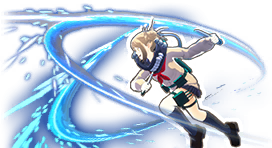
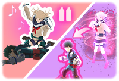

β: Ataque de asesina con cuchillos

Realiza un dash con sus cuchillos que al contacto con un enemigo lo corta.
Manten pulsado para ir corriendo a una mayor velocidad hacia adelante, abalanzadose con sus cuchillos y haciendole daño
a todo aquel que se interponga en su camino.
Habilidad Especial:
Jeringa Chupa Sangre / Transformacion

Si estas cerca de un enemigo abatido, puedes usar la habilidad para drenarle sangre con una Jeringa y asi cargar la habilidad especial de transformacion.
Pulsa para transformarte en un enemigo temporalmente y copiar su Set de Habilidades de Quirk y tambien aparecer con la etiqueta, localizacion del mapa y
vista a traves de las paredes para sus compañeros (pudiendo confundirlos).
Pulsa dos veces el boton de agacharte para destransformarte a voluntad propia.